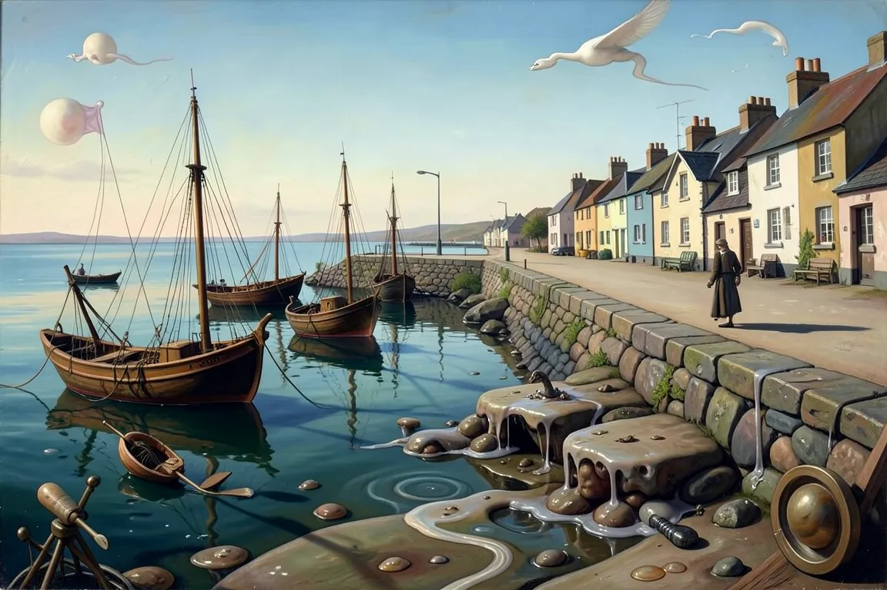

Картины снов в ясной точной манере: настоящие предметы в невозможных местах, встречи и смены масштаба. Деталь точна, а логика неверна, поэтому образ кажется и настоящим, и странным.

Главная идея
Картина способна показать разум глубже рассудка, поэтому она соединяет простые точные вещи так, как не допускает никакая логика бодрствования.
Принципы дизайна
Пишите каждый предмет точной простой деталью, как на фотографии, а встречу предметов делайте невозможной.
Ставьте сцену в широкое пустое глубокое пространство: низкий горизонт на 25–35% высоты и длинная ясная перспектива.
Меняйте масштаб намеренно: предмет в 3–10 раз больше или меньше соседа.
Плавьте, раскалывайте или соединяйте формы: мягкие часы, тело из ящиков, птица, которая есть лист.
Берите холодный спокойный ровный свет с длинными жёсткими тенями, как в сумерки или во сне.
Держите поверхность гладкой, а касание скрытым, чтобы странный образ выглядел настоящим.
Давайте картине загадочное название, которое её не объясняет, и оставляйте один предмет неразрешённым.
Антипаттерны
Логичная объяснённая сцена с ясным сюжетом
Свободная жестовая краска, привлекающая внимание к руке